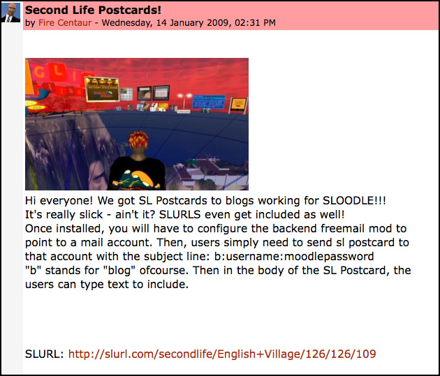

Freemail Blogger
From SLIS Second Life Wiki
Contents |
Summary
The Freemail Blogger was introduced in Sloodle 0.4, and is a modified version of the moodle blogging email bridge called Freemail, programmed by Serafim Panov, who has granted us a GPL3.0 license on his software!
Download
If you are using Moodle 1.8 or 1.9, you can download the freemail blogger here:
This will not work on Moodle 2.0 or higher, but we expect the tool to be built into SLOODLE soon, probably in version 2.2.
The Freemail Blogger allows moodle users to make blog posts simply sending a Second Life postcard to a special email address the instructor has set up.
What's cool is, all the text written in an SL postcard, AS WELL as the Second Life postcard image, will be included in the blog post along with a SLurl to the location of where the snapshot was taken in the virtual world! This is a great tool for you to use with your students as they explore the virtual world. It effectively provides a very simple (and free) way for your students to publish blog content from within the virtual world! 
{kind=link}
Youtube Tutorial
Compatibility
The Postcard Blogger is compatible with Moodle 1.9+
Setup
Automatic Configuration
The Freemail Blogger is distributed as part of the 0.4 release of SLOODLE and as an addon for Sloodle 1.0 To install the Freemail Blogger, do the following:
- Download the 0.4 release of SLOODLE, and uncompress it.
- With in the archive, you will find a folder called: "freemail"
- Upload the freemail folder to the mod folder on your moodle web site.
- Visit your moodle admin page in your web browser
- ex: http://www.yoursite.com/moodle/admin.
- This will initiate the automatic configuration and set up of the necessary database tables.
- Visit your moodle site, go to Modules->Activities->Manage Activities and fill out the configuration form.
- Note You will need to specify an email address where the Freemail Blogger can routinely check for
- blog posts. It is Recommended that this email address should be separate from your personal email
- address. The Freemail Blogger will add any item to your site blogs which have the subject line
- "b:username:password"
- Next, set up a Cron job on your server to automatically run the check_mail.php script
- located in /moodle/mod/postcardblogger/check_mail.php
- This PHP file will check your specified email account and post any Postcards which have been received.
Usage
Users can send blogs to "yourspecialemailaddress@yourserver.com" with the subject line: b:moodle_user_name:moodle_user_password to add blog posts to your moodle site.
| This page is part of the SLOODLE documentation | |||
|---|---|---|---|
| Docs: Users | Administrators | Developers | |||
| Wiki Frontpage Sloodle.org | |||